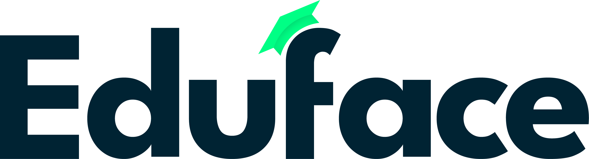

TL;DR:
Eduface is built to support educators with AI-powered feedback and grading, always under your control. We never use your assignments or personal data to train our AI models.
Your data is protected using strong encryption and processed exclusively on cloud infrastructure within the EU. The AI assists, the educator decides: institutions choose how feedback and grades are reviewed before students see them, and privacy remains a top priority.
Questions? We're here at info@eduface.me.
Eduface, a trading name of Blockbook B.V. (Chamber of Commerce number: 89149033), with its office at Europalaan 93, Utrecht, the Netherlands, respects the privacy of its users and ensures that any personal information you provide to us is treated confidentially.
In these Terms of Service (the "Agreement"), the following terms shall have the meanings ascribed to them unless the context clearly indicates otherwise:
If your Institution has a separate agreement and data processing agreement with Eduface, those agreements prevail over this Agreement where they differ.
Eduface grants a non-exclusive, non-transferable, and limited right to access and use the platform solely for your educational or professional purposes, subject to your full compliance with this Agreement. You agree not to use the platform for unlawful purposes, interfere with or disrupt the operational integrity of the platform, or attempt to access parts of the platform that are not intended for you.
As a user of Eduface, you are responsible for all activity conducted under your user account. You agree to:
As an educator, you remain responsible for the final assessment of your students' work.
All intellectual property rights (including copyrights, patents, trademarks, trade secrets, and database rights) in the Eduface platform, its software, and all content provided by Eduface (excluding Your Content) remain the exclusive property of Eduface and/or its licensors at all times. Use of the platform does not grant you any ownership rights or licenses to such intellectual property, other than the limited usage rights granted herein.
You and your Institution keep all rights to Your Content. Students keep the copyright on their own work. Eduface never uses Your Content, including student assignments, to train its AI models. Educators can optionally rate AI-generated feedback; these ratings are anonymous and contain no personal data.
Eduface processes personal data in accordance with the General Data Protection Regulation (GDPR) and other applicable data protection laws. When an Institution uses Eduface, the Institution is the data controller and Eduface processes personal data only on its instructions, under a data processing agreement.
All data is processed exclusively on cloud infrastructure within the EU and is not transferred outside the European Economic Area. Data is encrypted both in transit and at rest, and data of different Institutions is kept separate. Any security incidents can be reported to info@eduface.me and will be handled by the person responsible for privacy at Eduface.
Eduface operates as a Software-as-a-Service (SaaS) platform and relies on established cloud providers for secure data storage and processing. These providers act as sub-processors under written agreements and are bound by the same obligations as Eduface. Eduface never sells Your Content and does not share it with third parties, other than the providers needed to run the service or where the law requires it.
By uploading, submitting, or otherwise making available Your Content on or through the Eduface platform, you grant Eduface a non-exclusive, royalty-free license to use and process such Content solely for the purpose of operating, securing, and delivering the Eduface platform to you and your Institution. This license ends when Your Content is deleted from the platform.
You represent and warrant that you have all rights necessary to grant this license, and that the use of Your Content by Eduface does not infringe on the intellectual property rights, privacy rights, or any other rights of third parties.
Protecting your personal data is of utmost importance to Eduface. Details on how we collect, use, share, and store personal data are outlined in our separate Privacy Statement, which can be accessed on our website.
Eduface reserves the right to modify or amend this Agreement. Users will be notified of any material changes via email or a notification on the platform before the changes take effect. Your continued use of the platform after such notice constitutes acceptance of those changes.
This Agreement remains in effect until terminated by you or Eduface. You may terminate this Agreement by closing your account and ceasing to use the platform. Eduface may terminate this Agreement at any time, including in case of a breach of any provision of this Agreement. After termination, Your Content is deleted in accordance with our Privacy Statement and, where applicable, the agreement with your Institution.
You agree to indemnify and hold Eduface, its officers, directors, and employees harmless from and against all claims, liabilities, damages, losses, costs, and expenses, including reasonable legal fees, arising from your use of the platform, Your Content, or your violation of this Agreement.
Eduface strives to provide accurate and reliable AI-generated feedback and grade suggestions. However, as with any AI system, occasional inaccuracies or biases may occur. The platform supports transparency by showing an explainable breakdown per criterion. Educators remain responsible for reviewing feedback and grades before they are shared with students or used in final assessment.
Eduface and its affiliates shall not be liable for any indirect, incidental, special, consequential, or punitive damages, including loss of profits, data, use, goodwill, or other intangible losses resulting from:
If your Institution has a separate agreement with Eduface, liability is governed by that agreement. Nothing in this Agreement limits liability that cannot be limited under applicable law.
This Agreement shall be governed by and interpreted in accordance with the laws of the Netherlands. Any disputes arising from or related to this Agreement shall be submitted to the competent courts in the Netherlands or, where applicable, to a competent court in another jurisdiction as mutually agreed upon by the parties involved.
This Agreement, together with any separate agreement between Eduface and your Institution, constitutes the entire agreement between you and Eduface regarding its subject matter and supersedes all prior agreements or understandings. If any provision of this Agreement is found to be invalid, the remaining provisions shall remain in full force and effect.
For any questions or comments regarding this Agreement, you may contact Eduface at info@eduface.me.
By accepting this Agreement, you confirm that you have read, understood, and agree to be bound by all terms and conditions contained herein.